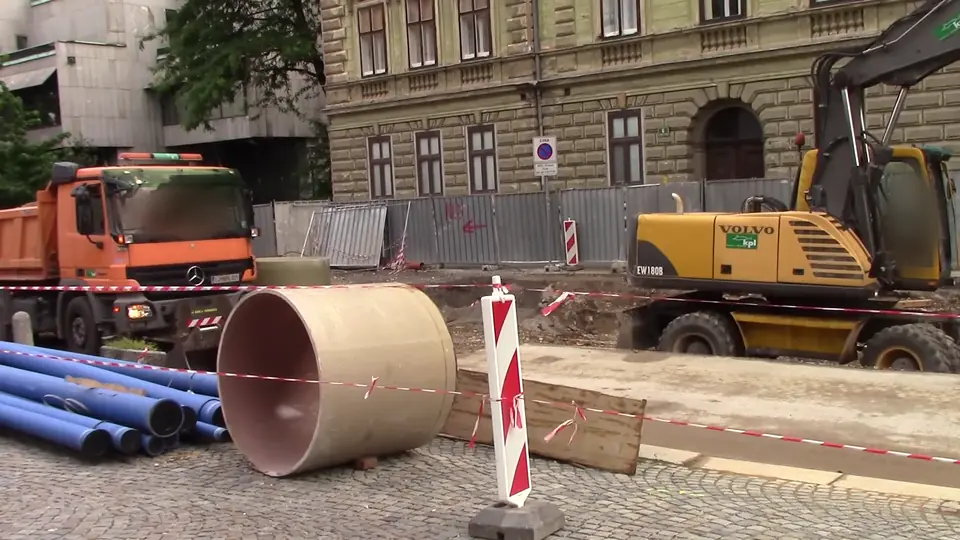

Линия с ручками и карточка «пересёк линию»

Приём. Линия поперёк пути с двумя ручками; каждое пересечение — карточка в ленте: что, где, когда, снимок.
У нас. Ровно наш учёт въездов: линию ставит оператор поперёк дороги, карточка — строка журнала с кадром-доказательством.